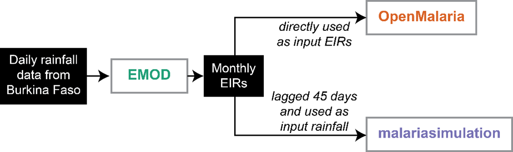

Defining transmission seasonality¶
To define transmission seasonality in your simulation, start with EMOD. Its seasonality and climate files are the most complex of the three models as they cannot be easily translated into monthly values. By running EMOD simulations first, you establish a seasonality baseline that you can use to align the other models, ensuring consistency across the models.

Our current environmental profile is artificially created to provide a simple setup for each model to align with.
If you want to create your own seasonal profile, follow the steps below.
1. Generate seasonal profiles¶
Obtain CSV files containing air temperature, land temperature, humidity, and rainfall for your desired location.
If you have access to IDM’s Calculon environment you can follow the process below.
Navigate to the Correct Directory:
cd MultiMalModPy
cd EMOD/inputs
Step 2: Edit nodes.csv Modify nodes.csv to include the coordinates for the location you want to simulate.
Step 3: Generate Climate Files Run the following command to generate EMOD’s required .bin and .json files:
python get_climate.py
This will create a folder containing:
- EMOD’s required .json and .bin files
- A weather.csv file (which you can edit for custom seasonal behavior)
Optional:
If you need to make custom changes to weather.csv and generate new .json and .bin files, modify the CSV and run:
python create_weather.py -generate_climate -climate_profile <csv_name>
Once completed, make sure all climate files:
✅ Have the prefix “seasonal”
✅ Are stored in the “climate” folder
By default, the generated files will have the same prefix as the CSV file you used.
If you choose to keep the original CSV filename, update the setup_sim.py file by changing the seasonality setting from “seasonal” to your CSV filename.
2. Run EMOD simualtions¶
Next, you need to run the calibration setup for EMOD (seasonal simulations only).
We use CM 0 to generate EMOD outputs, which are later used as inputs for the other two models.
More details on calibration runs and production runs are provided below.
Step 1: Run the EMOD Calibration Simulation
python launch_sim.py -r calibrun --models EMOD
Step 2: Run production run of EMOD
Once calibration is complete, run a production simulation to generate outputs for an annual EIR of 20 infectious bites per person.
Why EIR 20?
- EMOD’s peak simulated EIR varies with transmission intensity.
- The other two models do not exhibit this variation.
- We chose EIR 20 as a balanced middle ground to represent average EMOD simulations.
python launch_sim.py -r productionrun --models EMOD --output_type eir
3. Extract and Apply Seasonality Data¶
Step 1: Locate the Output File
Once the production run finishes, open the mmmpy_mth.csv file, located in the /simulation_outputs/<experiment name>/ folder.
This file should contain at least 20 EMOD simulations with monthly EIR values.
Step 2: Filter the Data (Recommended)
- Extract simulations for the 0-100 age group
- Use data from only the last year of the monitoring period
- Compute the monthly average EIR
Step 3: Update Seasonality Values
- Open the
utility/helper_simulation.pyto locate theseason_monthvariable. - Replace the 12 values of seasonal month with your new 12 monthly values.
4. Run Calibration Simulations for All Three Models¶
Once you’ve updated the seasonality values, you can now run calibration simulations for all three models.
python launch_sim.py -r calibrun --models EMOD malariasimulation OpenMalaria